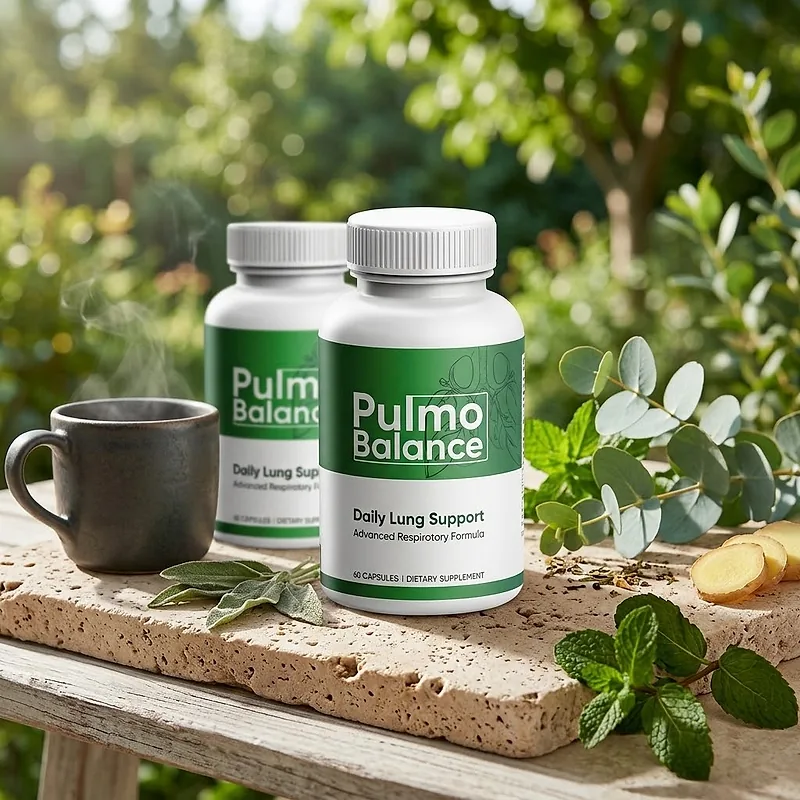
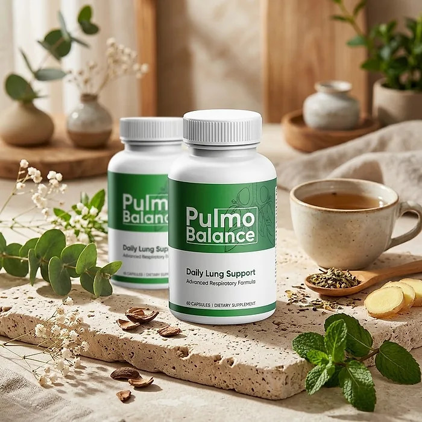
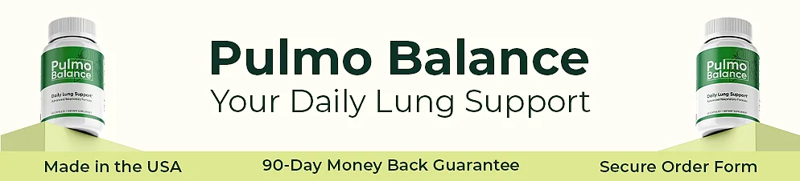

What Is Pulmo Balance And How Does It Work?
Pulmo Balance is a dietary supplement in capsule form designed to provide daily lung support, easier breathing, and all-day vitality for adults who want to address the congestion, chest heaviness, and seasonal respiratory discomfort that can build up with age, air quality, and busy routines through a natural, dependable approach — without complicated protocols or temporary quick fixes.
It utilizes a simple daily serving of two capsules with 13 ingredients, including Mullein, Bromelain, Maritime Pine Bark, Stinging Nettle, Tiger Milk Mushroom, and Quercetin, to support natural airway clearance, a balanced respiratory response, and healthy circulation in the lungs, helping the body maintain its natural balance throughout the day.
The ingredients in Pulmo Balance are botanical extracts, an enzyme, a medicinal mushroom, and a plant flavonoid that, according to the label, form an advanced respiratory formula, particularly for adults who prefer one simple routine over multiple products or complicated plans.
Rather than acting as a short-lived fix like a decongestant spray, Pulmo Balance focuses on supporting the respiratory system from within, working gradually alongside daily routines to help maintain clear airways and easy breathing, and long-term wellness.
With consistent daily use, a formula of this kind is intended to help with less congestion, a lighter chest, and more energy for daily activities, especially when combined with clean air at home, regular walks, good hydration, and not smoking.
From a practical standpoint, Pulmo Balance is a daily lung support capsule designed to support wellness from within — helping you breathe with ease, stay active, and remain in control of your health.
Assembled in the United States, according to the official FAQ, Pulmo Balance is designed for regular daily use, with a formula described as natural, non-GMO, easy to swallow, and non-habit forming, focusing on safety, purity, and quality for those seeking a natural, non-prescription route to respiratory wellness.
Pulmo Balance Ingredients
The official website says Pulmo Balance contains 13 carefully selected ingredients and highlights these six, chosen to support clear airways, respiratory comfort, and lung vitality as part of a consistent daily routine:
Mullein Extract: A traditional herb that supports natural mucus clearance and soothes the respiratory tract.
Bromelain Powder: An enzyme from pineapple that helps maintain a balanced inflammatory response in the bronchial tubes.
Maritime Pine Bark: A powerful antioxidant that supports healthy circulation in the lungs.
Stinging Nettle Extract: A botanical that helps maintain clear upper respiratory and nasal passages.
Tiger Milk Mushroom: A medicinal mushroom that the official website includes to promote lung tissue vitality.
Quercetin Dihydrate Extract: A plant flavonoid that supports a healthy histamine response during seasonal changes.
Together, these ingredients are designed to support easy breathing, clear airways, and respiratory comfort from within. The scientific references on the website also mention BioPerine (black pepper extract), included to help absorption. The official website does not publish the Supplement Facts panel with all 13 ingredients and their amounts, so the bottle label is the reference to check.
Pulmo Balance is designed for daily use, offering a natural, non-prescription approach to supporting respiratory wellness, without stimulants or complicated routines.
Pulmo Balance Side Effects
Pulmo Balance is generally considered well tolerated and is designed for adults of different ages and lifestyles who are looking for a safe, natural, and balanced approach to respiratory wellness, especially those who prefer an easy two-capsule daily routine to support clear airways, easy breathing, and vitality without resorting to risky solutions with severe side effects.
The official website describes the formula as natural, non-GMO, easy to swallow, and non-habit forming, made with pure plant ingredients and natural extracts, and assembled in the United States, reinforcing consistency, safety, and reliability.
With no widespread reports of serious side effects, Pulmo Balance is generally considered a well-tolerated option. A few points deserve attention: bromelain and pine bark may add to the effect of blood thinners, people allergic to pineapple should avoid bromelain, and quercetin may interact with some medications. Shortness of breath, chest pain, a persistent cough, or wheezing always need a medical evaluation, and the formula does not replace an inhaler or any prescribed treatment. It is not intended to diagnose, treat, cure, or prevent any disease, and individual results may vary.
According to the official FAQ, it is not for use by those under the age of 18 or by pregnant or nursing mothers, and anyone with a medical condition or taking prescription medication should consult a physician before using Pulmo Balance, ensuring it fits safely within their personal wellness plan.
Pulmo Balance Dosage
The recommended Pulmo Balance dosage is two capsules daily with a meal, according to the official FAQ, and it is designed to fit easily into a daily routine, making consistency simple and convenient. Formulated as an easy-to-swallow capsule, it requires no powders to mix, no drinks to prepare, and nothing to measure.
The official FAQ also reminds readers not to exceed the recommended dose. Taking the capsules at the same meal each day, for example with breakfast, makes the routine easy to remember and allows its ingredients to work consistently.
For best results, consistency is key. Each bottle contains 60 capsules, a one-month supply, and the official website says the best results come with 4 months or longer of consistent use, which is why many people make it part of an ongoing routine.
There is no need for complex schedules or multi-step routines. One simple daily serving is designed to build support gradually alongside clean indoor air, regular walks, deep-breathing exercises, and good hydration.
As with any dietary supplement, it's important not to exceed the recommended dose and to check the label on your bottle. Pulmo Balance works best when used regularly, combined with proper hydration, balanced nutrition, and healthy daily habits.
Pulmo Balance – Refund Policy
You can order Pulmo Balance with confidence, knowing that every purchase is protected by a 90-day money-back guarantee counted from the original purchase. This allows you to try the formula and decide if it delivers the support you expect.
According to the order page, you can return the product, even empty bottles, within 90 days for a full refund, minus shipping and handling fees, issued within 48 hours of the product being returned. The return policy page adds that a return authorization (RMA) must be requested within 90 days of purchase and that the product must be sent back within 14 days of receiving the RMA, with the customer paying the shipping.
How the refund process works: Email support to request your RMA, ship the product to 285 Northeast Ave, Tallmadge, Ohio 44278, and email the RMA and the tracking number. Once the return is received and inspected, you receive an email, and the refund is credited to your original payment method.
Customer Support Contact Information: support@pulmobalance.com or +1-888-834-4386, Monday to Sunday from 10 AM to 1 AM EST, as listed on the contact page of the official website. Order questions can also be sent to BuyGoods, the retailer.
Refund Processing Time: The order page promises the refund within 48 hours of the product being returned; the return policy says the credit is applied within a certain number of days, depending on your bank.
This refund policy is designed to give customers a clear and transparent experience when trying Pulmo Balance.
Pulmo Balance Customer Reviews
-
Martha S.Verified Purchase – 6 Bottles
“It does everything it claims to do! I’ve gone from feeling constantly heavy and congested to breathing with a clarity I haven’t felt in years. I even feel lighter and more active... I've dropped that stubborn 'heavy' feeling without even really changing my daily routine! I finally feel like I’m back in control of my own vitality. I’ve been taking Pulmo Balance for a little over a month and I love it. I’ve tried so many other supplements that just didn't work. This one actually does!”
-
Christopher R.Verified Purchase – 6 Bottles
“My breathing feels steady and I have so much more energy. This product is great. I spent hours looking up helpful plants and extracts like Mullein and Tiger Milk Mushroom and was going to buy them all separately, but then I found this formula and everything I needed was already included in one bottle!”
Pulmo Balance – Where To Buy
Pulmo Balance is sold through its official website, so if you decide to try it, it's important to be careful about where you purchase it. The official website is the only sales channel the manufacturer lists, and it does not point to marketplaces such as Amazon, eBay, or Walmart.
Listings on third-party platforms may look similar but cannot be verified as authentic, raising concerns about safety, quality, and ingredient freshness. Products purchased outside the official source may not be covered by the 90-day guarantee.
For this reason, it makes sense to purchase Pulmo Balance only through the official website. Buying directly from the official source ensures you receive the authentic original product, made in the USA, with access to customer support and the full guarantee. According to the official website, every order is a one-time purchase, with no subscription or auto-ship, and orders are processed by BuyGoods, the retailer named on the site.
To avoid counterfeit batches and ensure maximum quality, always verify that you are ordering from the official Pulmo Balance website before completing your purchase.
To ensure you’re getting the authentic product, most users choose to visit the official website.
Is Pulmo Balance A Scam?
Based on what the official website discloses, Pulmo Balance does not appear to be a scam. It is a real capsule supplement, sold through an established retailer, and formulated to provide daily lung and respiratory support as part of a consistent routine.
The ingredients used in Pulmo Balance — Mullein, Bromelain, Maritime Pine Bark, Stinging Nettle, Tiger Milk Mushroom, and Quercetin — are known in the wellness field, and the official website describes what each one is included for and lists scientific references about them.
In addition to its formula, Pulmo Balance is assembled in the United States, according to the official FAQ, with support by phone and email seven days a week and a published return address in Ohio, with a focus on safety, purity, and consistency.
The customers quoted on the official website describe less congestion, steadier breathing, and more energy. A fair point of criticism is that the website does not publish the full Supplement Facts panel, says the 13 ingredients "support healthy blood sugar levels" in a heading that seems copied from another product, and uses a generic return policy that keeps shipping and handling fees. Results vary from person to person, and no supplement replaces medical care for breathing problems.
Pulmo Balance is backed by a 90-day money-back guarantee, and the return steps and the return address are published on the official website, which gives customers a clear path if the product does not meet their expectations.
If you're looking for a simple daily capsule to support easy breathing, clear airways, and vitality without complicated routines, Pulmo Balance is worth considering — especially when purchased directly from the official website.
For those who want to verify product details or check current availability, the official Pulmo Balance website remains the safest option.

Check Availability On Official Website
